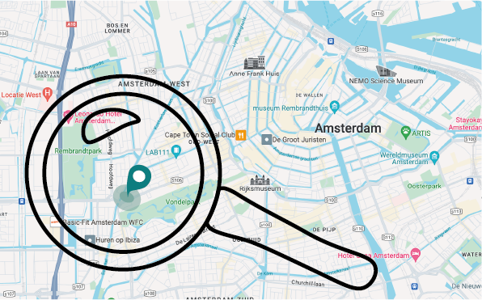
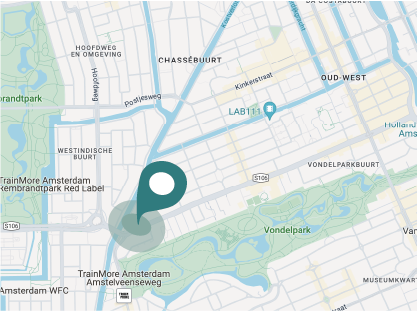
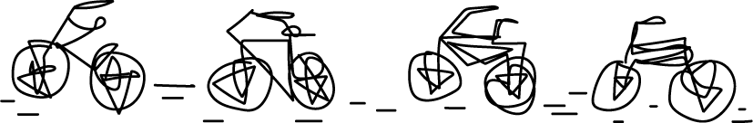

Fietsenlocatie in Amsterdam
De e-bike-to-go word na het aanschaffen van een abonnement aan huis geleverd. Hierom zijn er dus geen ophaalpunten rondom Amsterdam. Wel heb je bij de Overtoom in Amsterdam een locatie om de fiets te testen of je fiets te laten repareren. Zie hieronder de locatie:
Adres: Overtoom 572, 1054 LN Amsterdam
 